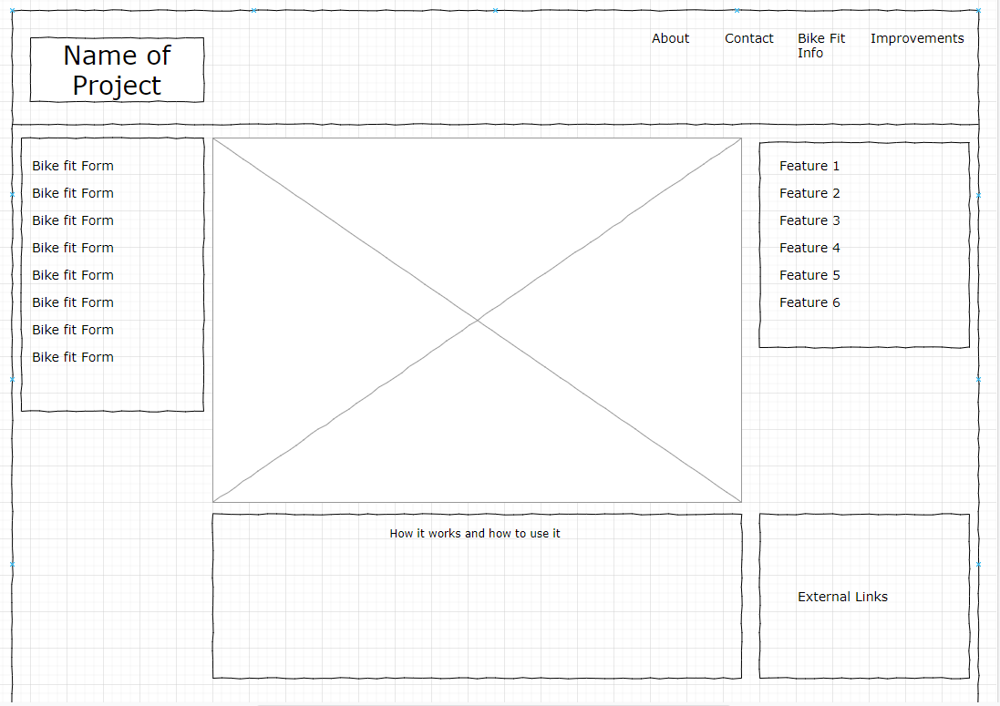
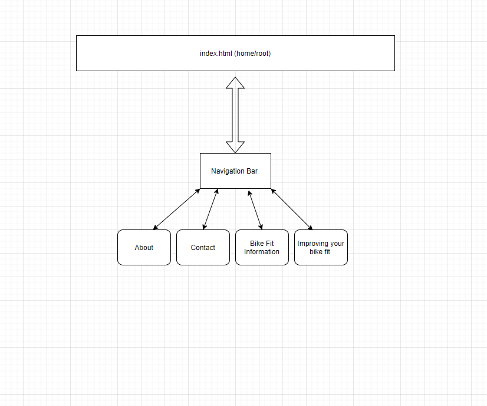

The applications purpose is to measure the person who wants a bike fit and then using
an algorithm it will suggest the best bike fit for them on the type of bike they have.
The intened users of the website will be cyclists looking for a bike fit.
The content of the website will include a form which the user can fill out and a
diagram of the type of bike the user selected. Once the user has filled out the form the program
will return a p tag with the sugestions of their bike fit.
Client Information
[private]
Bicycle Sport, which is a bike shop in Charolotte
[private]
[private]
Wire Frame

A image of the wire frame for the default page made by draw.io
Site Map

A image of the site map made by draw.io
Page Design
Home
Name of the page: Home
Purpose of the page: To handle the main interaction of the form and the reults of what the persons
bike fit would be
Audience: User
Content: The bike fit image, the user form, the results of the bike fit entry
Ask users to enter data?: Yes
Data need validation?: Yes
Page conatain buttons?: Yes
Actions will happen on the page?: When the user inputs the data on the form, the input will be proccessed
and then entered into the function cotaining the alogrithm which will then be used to guesitmate the users
ideal bike fit positions
Special Notes: No
About
Name of the page: About
Purpose of the page: To handle any questions the user might have about the feed back we give them.
Also to describe the story of the website and who was involved in it.
Audience: Curious Users
Content: Mainly just text
Ask users to enter data?: No
Data need validation?: No
Page conatain buttons?: No
Actions will happen on the page?: None
Special Notes: No
Contact
Name of the page: Contact
Purpose of the page: To display our contact information and to take any questions the user may have through
an input email form
Audience: Curious Users
Content: Text and a form
Ask users to enter data?: No but the user can if they would like
Data need validation?: Yes
Page conatain buttons?: Yes
Actions will happen on the page?: Possibly submit a email or a message
Special Notes: No
Bike Fit Information
Name of the page: Bike Fit Information (unless I can come up with a better name soon)
Purpose of the page: To describe how bike fits normally would work and to describe how a bike fit
can improve many aspects of your cycling performance and enjoyment.
Audience: Curious Users
Content: Text
Ask users to enter data?: No
Data need validation?: No
Page conatain buttons?: No
Actions will happen on the page?: None
Special Notes: No
Imporving Your Bike Fit
Name of the page: Imporving Your Bike Fit (unless I can come up with a better name soon)
Purpose of the page: Describes what you can do as the user to improve your bike position so you can be more
aero and possibly recrute more muscle groups that may have been inactive bescause of your current bike fit.
Audience: Curious Users
Content: Text
Ask users to enter data?: No
Data need validation?: No
Page conatain buttons?: No
Actions will happen on the page?: None
Special Notes: No
Dynamic Functionality on the website
The dynamic functionality I plan to implement is a form based data collection in which the data will
be used in an alogrithm to find the users ideal bike fit.
I would also like to implemnt a interactive image of the type of bike the user would like to be fit on,
where the user can click and drag different parts to see how that would change their fit.